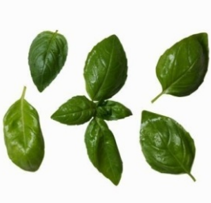
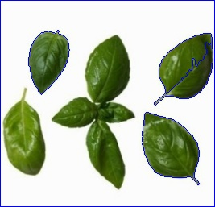

The algorithm is called Watershed, because its conceptualization involves water. Imagine areas with low density (little to no change) in an image as valleys, and areas with high density (lots of change) as peaks. Start filling the valleys with water to the point where water from two different valleys is about to merge. To prevent the merging of water from different valleys, you build a barrier to keep them separated. The resulting barrier is the image segmentation.
This is our input image

# Import Necessary Libraries
import numpy as np
import cv2
# Read image and convert it into grayscale
img = cv2.imread('basil.png')
gray = cv2.cvtColor( img, cv2.COLOR_BGR2GRAY)
# Convert image into only black and white depending upon threshold
ret, thresh = cv2.threshold(gray, 0, 255, cv2.THRESH_BINARY_INV + cv2.THRESH_OTSU)
# Create a kernel of 3x3 contains ones
kernel = np.ones((3,3),np.uint8)
# Remove noise from the image by applying the morphologyEx transformation
opening = cv2.morphologyEx( thresh, cv2.MORPH_OPEN, kernel, iterations = 2)
# Dilating the result of the morphology transformation, we can obtain areas of the image
that are most certainly background
sure_bg = cv2.dilate(opening, kernel, iterations=3)
# Obtain sure foreground areas by applying distanceTransform
dist_transform = cv2.distanceTransform( opening, cv2.DIST_L2,5)
# Apply threshold to determine with a highly mathematical probability whether the areas are foreground.
ret, sure_fg = cv2.threshold( dist_transform, 0.7*dist_transform.max(), 255,0)
# Subtract the sure foreground from the background
sure_fg = np.uint8(sure_fg)
unknown = cv2.subtract(sure_bg, sure_fg)
# We can build our famous “barriers” to stop the water from merging
ret, markers = cv2.connectedComponents( sure_fg)
# We add 1 to the background areas because we only want unknowns to stay at 0
markers = markers+1
markers[unknown==255] = 0
# Draw the markets on the image
markers = cv2.watershed(img, markers)
img[markers == -1] = [255,0,0]
# Store image as watershed.jpg
cv2.imwrite("watershed.jpg", img)
Output Image will be:
